144-hour Visa-Exemption Transit Policy
Citizens from countries which are listed in the 144-hour Visa-Exemption Transit Policy can transfer in China via any of the following ports of entry including Xiamen Gaoqi International Airport, Wutong Port, or Xiamen International Cruise Terminal without Chinese visas by supplying their own valid international travel documents and onward flight/vessel/train tickets to a third country (region) with confirmed date and seat within 144 hours upon their arrival.
After having successfully applied for 144-hour visa-exemption transit at one of the above-listed ports of entry, transit passengers are allowed to stay within the restricted administration precinct of Xiamen City only.
Citizens from the following countries can apply for 144-hour visa-exemption transit. These countries are:
Albania, Argentina, Austria, Australia, Belgium, Bosnia and Herzegovina, Brazil, Brunei, Bulgaria, Canada, Chile, Croatia, Cyprus, Czech Republic, Denmark, Estonia, Finland, France, Germany, Greece, Hungary, Iceland, Italy, Japan, Latvia, Lithuania, Luxemburg, Macedonia, Malta, Mexico, Montenegro, Netherlands, New Zealand, Poland, Portugal, Qatar, Romania, Russia, Serbia, Singapore, Slovakia, Slovenia ,South Korea, Spain, Sweden, Switzerland, The principality of Monaco, The republic of Belarus, United Arab Emirates, Ukraine, United Kingdom, United States of America.
Please read the following information carefully.
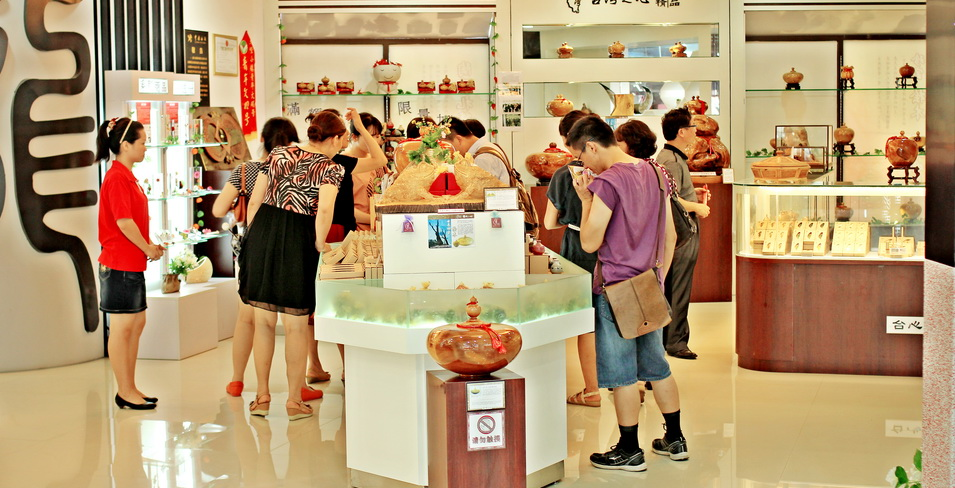
1、Temporary entry foreigners are not allowed to overstay the time limit and area remarked on the temporary entry permit。Violators should be subject to penalty for illegal stay.
2、Residence registrations are compulsory. Those who do not stay in hotels shall, within 24 hours upon arrival, go through residence registration formalities with the public security organs in the places of residence. A warning shall be given, and a fine of not more than RMB 2,000 yuan may also be imposed on violators according to relevant law and regulation of China.
3、Those who have to stay over the approved time limit due to force majeure should apply to the local exit-entry administration bureau for a relevant permit.
(Add: # 64-1 Zhenghai Road Siming District of Xiamen, Tel:0592-2262203)
Recommended 144h Visa-free Travel Routes of High Quality
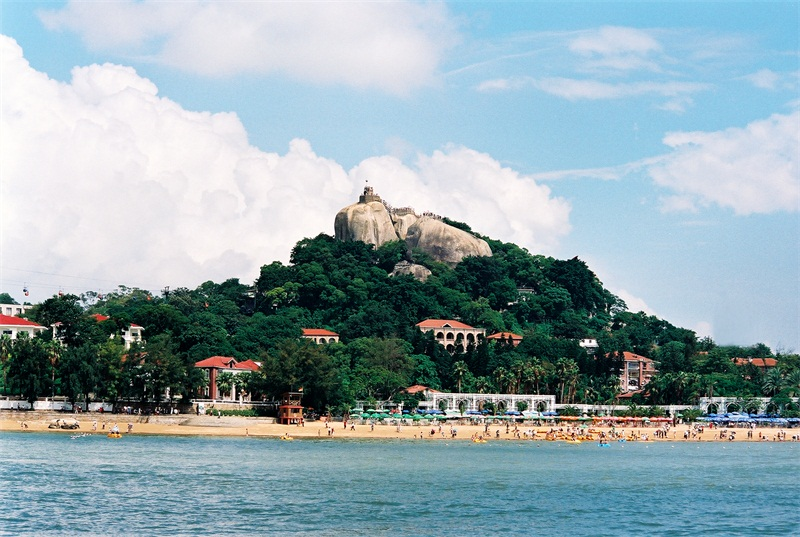
Theme 1: Seaside Tour
Route 1: Kulangsu (Exotic buildings - Sunlight Rock - Shuzhuang Garden) - Zengcuo'an
Kulangsu is famous as "Piano Island", "Music Island" and "Exposition of Exotic Buildings". It is a national Class 5A scenic zone and the top 5 downtown districts of China. In 2017, it was included in the register of world cultural heritages.
Zengcuo'an is honored as the "most artistic Chinese fishing village". It has an enormous collection of red-brick ancient buildings and exotic buildings of Southeast Asian styles and many personalized stores.
Route 2: Island Ring Blvd - Wuyuan Bay Wetland Park - Sailboat cruising
Island Ring Blvd is 43km long and connects Xiamen University, Hulishan Fortress, Huangcuo Beach, Exhibition Center, Light-tower Park and other tourist attractions like a string of pearls. It is also famous as the "most beautiful Marathon track in the world".
Wuyuan Bay Wetland Park is Xiamen's largest park and also the largest wetland ecological park. It is honored as Xiamen's oxygen generator.
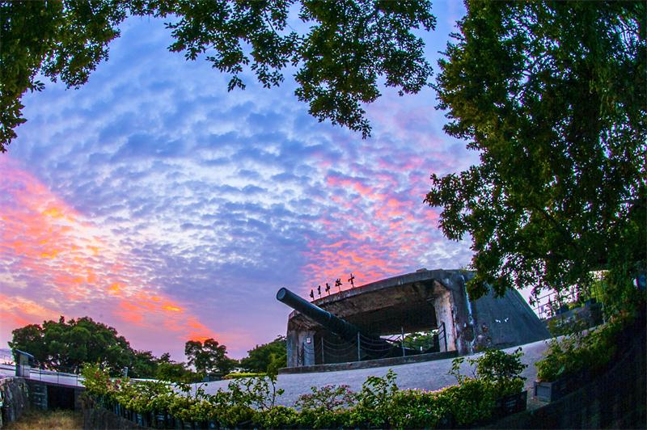
Theme 2: Maritime Silk Road Cultural Tour
Route 1 (two-day tour):
D1: Xiamen (Hulishan Fortress - Kulangsu)
D2: Xiamen (Ancient Cangjiang Town of Haicang - Qingjiao Ciji Temple)
Hulishan Fortress was constructed in the 20th year of Guangxu Period of Qing Dynasty (1894). Historically honored as "gateway to Fujian and key to South China", it is currently a national key protected unit of cultural relics and accommodates an 87t Krupp cannon with a shooting range of 19,760m produced in 1893. It won the China Records for "the world's existing oldest and largest 19th-century coastal cannon on the original site".
Qingjiao Ciji Temple, also known as Eastern Palace, is a national key protected unit of cultural relics. Located in Qingjiao Village of Haicang District, it was constructed in memory of Wu Tao, Baosheng Dadi, in the 21st year of Shaoxing Period of the Southern Song Dynasty (1151).
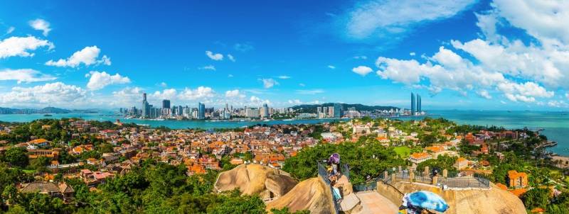
Theme 3: World Heritage Tour
Route 1: Kulangsu (Exotic buildings - Organs Museum - Sunlight Rock - Shuzhuang Garden - Gangzaihou Seaside Bathing Beach)
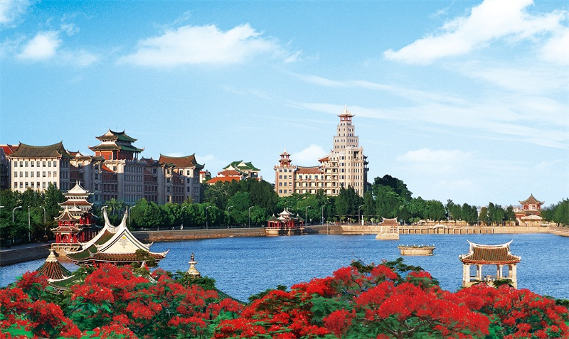
Theme 4: South Fujian Cultural Tour
Route 1 (two-day tour):
D1: Xiamen (Jimei School Village - Jimei Aoyuan Garden - Old Courtyard Scenic Zone
D2: Xiamen (Huihe Rock Cultural Park - Cai's Lacquer Thread Statue)
Jimei School Village, invested and founded by Tan Kah Kee, the famous patriotic leader of overseas Chinese in 1913, enjoys a good reputation at home and abroad. It was included in the first register of "20th-century architectural heritages of China" in 2016. With a western-style body and a local-style roof, it used to be called as "someone in a business suit and a bamboo hat" and well represents the architectural style of South Fujian as a hometown of overseas Chinese.
Old Courtyard Scenic Zone is a national Class 4A scenic zone and comprises two parts, i.e. old courtyard folk customs and culture park and Minnan Legend Show. The park primarily displays the local fishing village culture, folk customs and culture, Mazu culture, Southeast Asian culture and the origins of Ancestor cultures. Minnan Legend Show is the world's first 360-degree super-scale indoor show having South Fujian culture as the main line.
Huihe Rock Cultural Park is a landmark theme park of rock culture in Xiamen. It displays the centennial rock culture of South Fujian through exquisite stone constructions, delicate stone statues and elegant environments.
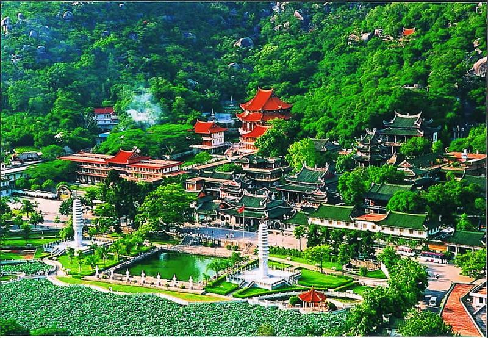
Theme 5: Religious Pilgrimage Tour
Route 1 (two-day tour):
D1: Xiamen South Putuo Temple - Kulangsu (Catholic Church - Trinity Church - Sunlight Rock Temple - Shuzhuang Garden - Exotic Buildings)
D2: Xiamen (Qingjiao Ciji Temple - Miaojixiang Incense Factory)
South Putuo Temple, one of the Buddhist resorts of South Fujian, is located in Siming District of Xiamen. It is so named because it is located to the south of Putuo Mountain and it accommodates Kwanyin, like the Kwanyin Temple on Putuo Mountain of Zhejiang Province.
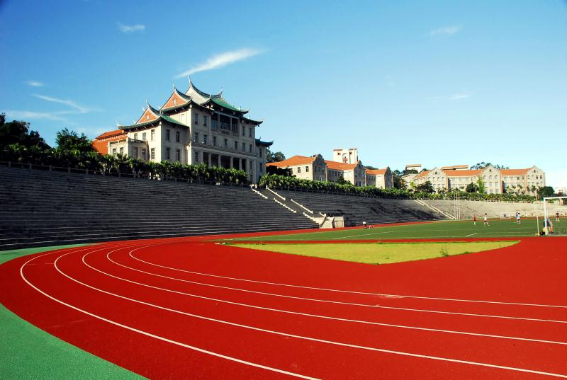
Theme 6: Leisure Tour
Route 1 (three-day tour):
D1: Kulangsu (Sunlight Rock, Haoyue Garden, Shuzhuang Garden, Organs Museum and International Lettering Art Museum) - Lujiang River Night Cruise
D2: Above The Clouds • Xiamen - Xiamen University - South Putuo Temple - Hulishan Fortress - Baicheng Beach - Sightseeing Walkway on Island Ring Blvd
D3: Gulong Sauce Cultural Park - Kaiko Golf Club - Haiwan Park - Café Street
Above The Clouds • Xiamen is also named Panorama Hall of Xiamen Shimao Strait Building where one can have a panorama of Xiamen. The 1,300sqm panorama hall is designed for sightseeing, multimedia interaction, leisure and recreational purposes. One can enjoy the beautiful scenes around from a unique perspective at an altitude of 300m, including the most locally-featured "old Xiamen", the Kinmen Island close-by and the Taiwan Strait further away.
Xiamen University is honored as one of the "most beautiful Chinese campuses" and its unique architectures of western and Chinese styles are the greatest attraction.
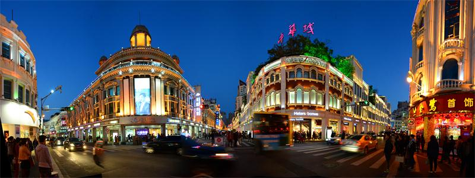
Theme 7: Xiamen Gourmet Tour
Route 1: (Kulangsu) Longtou Fish Ball Restaurant (Longtou Road) - (Zhongshan Road) Lianhuan Pan-fried Oyster with Egg - Aqing Spring Roll - Huang Zehe Peanut Soup - (South Putuo Temple) South Putuo Temple Vegetarian dishes - (Xiamen University) Wutang Satay Noodles - Laoershikou Sea Worm Jelly
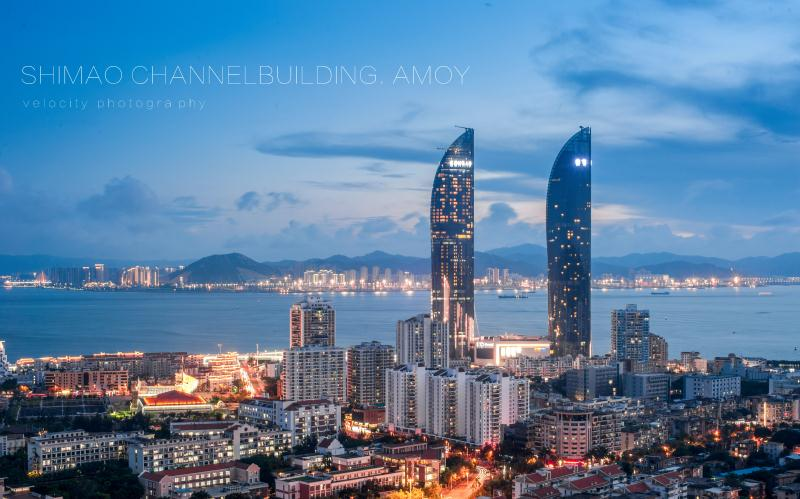
Theme 8: Happy Shopping Tour
●SM Shopping Business District is located on Xiahe Road, Huli District, Xiamen. It has the vibrant and prosperous SM City Mall and the fashionable and elegant SM New Life Plaza.
●Huli Wanda Business District is located on Xianyue Road, Huli District, Xiamen. As a rendezvous of bourgeoisies, it comprises Wanda Cinema, shopping mall and Huli Golden Street.
●Shimao E-mall Shopping Center is located on West Yanwu Road, Siming District, Xiamen and inside Xiamen's new landmark, i.e. Twin Towers of Shimao Strait Building. It is a comprehensive urban multi-experience space for shopping, tourism, commercial, cultural and leisure purposes.
●Xiamen Paragon Center Shopping Mall is located on Lianyue Road, Siming District, Xiamen; it has an enormous collection of world-class goods and fashion business modes and therefore is a concentration of high-end products in Xiamen.
●The Mixc Xiamen is located on South Hubin Road, Siming District, Xiamen. With a total construction area of about 420,000sqm, it is an urban complex comprising a shopping center, super Class 5A office buildings and a super five-star boutique hotel.
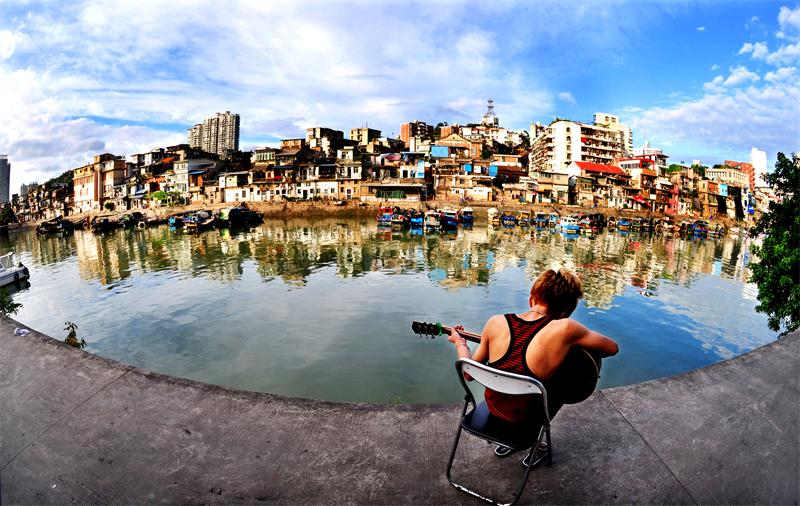
Theme 9: Road Tour
Route 1: Xiamen No. 8 Market - Zhongshan Road - Huaxin Road - Shapowei (Breeze Musical Collection) - Jimei Dashe
As is known to all natives of Xiamen, No. 8 Market is the famous "old landmark of Xiamen". It cherishes numerous memories of Xiamen natives and the oldest "taste of Xiamen".
Shapowei is the origin of Xiamen Island and the cradle of Xiamen city. It is laden with numerous childhood memories of Xiamen natives and has witnessed the growth of generations of Xiamen inhabitants. After renovation in 2014, it has become the earliest and largest marketplace and platform of creative ideas.
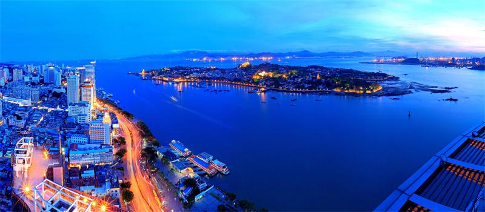
Theme 10: Night Tour
●Lujiang River Night Cruise
●Yundang Lake Cruise/Bailuzhou Light Show/Musical Fountain are all located inside Bailuzhou Park. Take a cruise ship and enjoy the reflections of neon lights in the lake and the sparkling skyline. The scenes of musical fountain and light show should be a stunning experience to you.
●Haiwan Park is a very good place to enjoy the night views of three building clusters, i.e. Rongxin Ocean City, Taidi Haixi Center and Xiamen Center along Haicang Bay. When night falls, the sparkling lights and high buildings of Haicang District across the sea and the illuminated Haicang Bridge constitute a spectacular scene.
●Jimei Dragon-boat Pond is a place to enjoy the night views of Jimei Middle School, Nanxun Building and other architectures of Tan Kah Kee style on the other side of the Dragon-boat Pond. Static warm floodlights are primarily adopted to highlight the architectural style and the beauty of Tan Kah Kee Buildings of this zone.